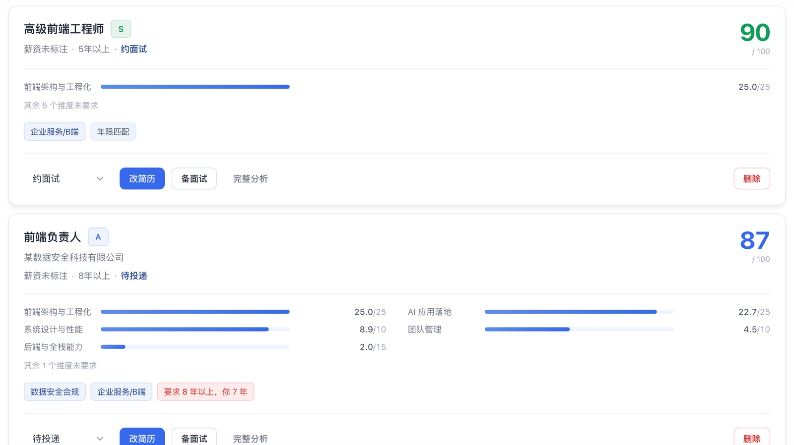
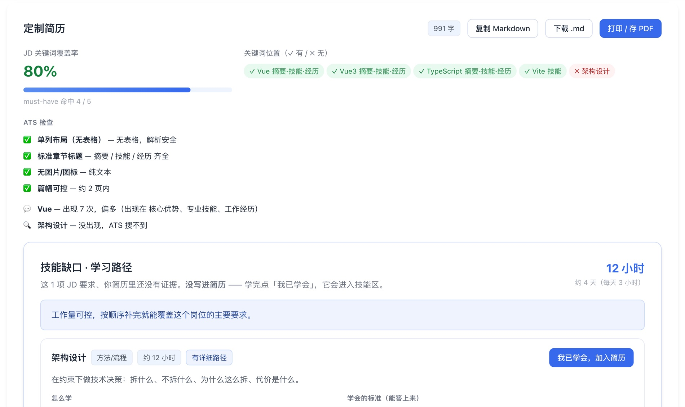
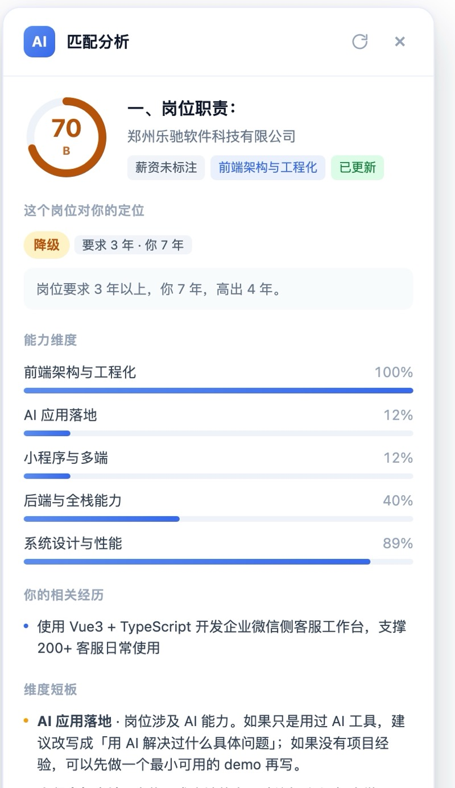

🎯
岗位匹配：先判断该不该投
按 6 个维度打分，并告诉你这个岗位对你是上浮 / 平级 / 降级。 投之前就知道值不值得花时间。
- 维度得分 + 命中关键词
- 年限错配提醒（超 6 年会被怕待不住）
- 外包/驻场等红线自动降分
粘贴一个岗位描述，30 秒得到：匹配度评分、该改哪些经历、 缺什么技能要补多久、以及一份能直接投出去的定制简历。

不是又一个「AI 帮你写简历」。是把判断和产出都做掉。
按 6 个维度打分，并告诉你这个岗位对你是上浮 / 平级 / 降级。 投之前就知道值不值得花时间。
按 JD 重排要点、补关键词、查 ATS 格式，直接生成一份完整简历。 支持打印成 PDF。
不是通用题库。按这个岗位的要求，生成 9 段结构化复习文档， 每个主题含伪代码和追问。
在 BOSS、智联、猎聘等站点看岗位时，右下角一键算匹配度。 切换岗位自动重新分析。
下面是一次真实跑测的结果（演示账号数据，公司名已脱敏）。
架构 100% / AI 落地 91%。7 年经验正好在要求区间，主导过工程化改造。 结论：值得投，重点讲 AI 落地那段。
架构命中，但缺 A11y、Nx monorepo、Playwright。 覆盖率 46%，缺口 7 项。结论：可投，但要先补 2 项。
要求 1-3 年、Vue2 页面搭建。你 7 年、做过架构。 结论：红线命中，直接放弃 —— 投了也是浪费时间。

粘贴文本，或上传 .md / .docx。自动拆成可被 JD 匹配的要点。
装浏览器扩展一键抓，或直接粘贴 JD。支持批量导入。
按分数排序决定投哪个，再生成针对该岗位的定制简历。
生成复习文档、整理 STAR 故事，投递后回来记录结果。
在招聘网站看岗位时，右下角一键出结果。不用复制、不用切页面。

导入简历 + 一个 JD，30 秒出结果。
先导入你的简历，再按岗位改简历、备面试。
基于真实 JD，帮你改简历、备面试、选对岗位
三个真正耗神的问题，三个能直接用的答案
六维度加权评分，指出技能重合度、行业方向、年限层级，以及外包等红线风险。
按这份 JD 重排你的简历要点，生成针对性摘要，列出该补的短板和漏掉的关键词。
从 JD 反推知识点，输出 P0/P1 清单、可能的面试问题，以及两天的复习安排。
全部数据存在本地文件，API Key 只走环境变量，不写库、不写文件、不返回前端。
四步，从看到一份 JD 到准备好面试
从招聘网站复制岗位描述粘贴进来，或拖一个采集书签一键复制。
拿到分数、评级和风险提示，判断这个岗位值不值得花时间。
按建议重排要点、替换摘要，把这份 JD 最看重的内容放到最前面。
照着 P0 清单复习，用 STAR 结构把项目讲清楚，再投出去。
关于数据、评分和边界的诚实说明
不会。工具只处理你自己粘贴进来的文本，不登录任何招聘平台、不发起爬取请求。 如果觉得复制麻烦，可以用「导入 JD」页里的采集书签：你手动打开岗位页、手动点一下，它把当前页面内容复制到剪贴板。
基于关键词与权重计算，不是语义模型。按「JD 实际要求的维度」算满足度，再叠加广度与修正项。 优点是可控可解释，缺点是同义改写会漏判。它的价值是相对排序，不是绝对判定。
全部存在服务端本地文件，不上传第三方。API Key 只从环境变量读取。AI 功能默认关闭， 没配 Key 时评分、简历建议、复习计划照常可用。
平台每日沟通额度有限，自动投递会把额度烧在不匹配的岗位上，反而拉低回复率； 群发招呼语一眼就能看出来。把力气花在筛得准、改得好、准备充分上，回报更高。
这是整个产品的基础：评分、简历优化、复习清单都基于你这份简历。
粘贴简历全文，或上传 .txt / .md / .docx 文件。会按章节和列表行自动拆成「可被 JD 匹配的要点」。
PDF 请先复制文字后粘贴（无第三方依赖，不解析 PDF 二进制）。
把经历拆成 STAR 骨架。同一个故事可以在不同岗位复用，补过的细节会保留。
把经历拆成 STAR 骨架。同一个故事可以在不同岗位复用，补过的细节会保留。
自动识别可能不准，可以手动修正。年限会直接影响「是否 overqualified」的判断。
针对具体岗位生成的完整简历。可直接复制、下载 Markdown，或打印成 PDF 投出去。
到「职位列表」点开任意岗位，点「生成简历」。会按该岗位的 JD 重排要点、 补齐关键词、检查 ATS 格式，并存成一个版本。
选一个岗位，按它的要求生成知识点清单、面试问题和复习安排。
建议优先准备 S / A 级岗位，投入产出更高。
所有已导入的岗位，按匹配度排序。点开可看完整匹配分析和 JD 原文。
从 BOSS 直聘、智联招聘、猎聘或公司官网复制岗位描述，粘贴进来即可分析。
没有现成的 JD？勾几个样例直接导入，几秒钟就能看到完整效果。 标注「真实」的来自公开的官方招聘页（附来源链接），其余是按真实岗位要求结构构造的示例，非真实招聘。
把下面这个链接拖到浏览器书签栏。以后在招聘网站打开任意岗位页，点一下书签， 它就会把当前页面内容复制到剪贴板，你回来粘贴即可。
说明：书签只在你主动点击时执行，只读取你当前看到的页面文本并写入剪贴板， 不发起任何网络请求、不登录账号、不批量抓取。
⌘⇧B（Mac）或 Ctrl+Shift+B（Win）生成 Markdown 投递优先级报告，含数据概览、岗位排序、维度得分与风险提示。
用你真实的投递结果，反过来校准评分权重 —— 哪些能力真正带来面试，让数据说话。
在招聘网站看岗位时，右下角一键算匹配度，不用复制粘贴。
扩展要单独一个凭据才能访问你的账号 —— 因为浏览器不会把网站的登录状态带给扩展。 这就是「访问令牌」。
jme_xxxxxxxxxxxxxxxxxxxxxxxxxxxx，jme_ 开头，36 位随机字符
chrome.storage），不上传到别处
jme_...，点 「复制令牌」jm-extension 文件夹，
里面能看到 manifest.json。把这个文件夹放到一个你不会删的位置。
chrome://extensions（Edge 用 edge://extensions），
打开右上角「开发者模式」。
按顺序确认这四项，有一项不对就看下面的排查。
chrome://extensions 里找「AI 求职助手 · 岗位匹配」按顺序排查：
chrome://extensions 看这一项有没有报错，点「重新加载」如果是别的网站，按钮不会出现 —— 用网站上的「导入 JD」粘贴文字分析。
一般是令牌不对或服务器连不上：
招聘网站改版会导致自动识别失败。用面板上的「手动选择区域」： 点了之后在页面上框选 JD 所在的区域，实时高亮预览，点一下确认。
这样即使网站大改版也能用。
扩展需要「访问该网站」的权限。保存时浏览器会弹一个授权提示，点「允许」。 如果没弹，刷新一下扩展弹窗再点保存。
默认地址和本机地址已经预先授权，不用额外操作。
重新走一遍安装步骤，令牌可以复用同一个（在下面列表里能看到，但不能再次显示明文）。 忘了就撤销旧的、生成新的。已导入的简历和岗位都在服务器上，不会丢。
在 BOSS 直聘、智联、猎聘、拉勾、前程无忧、LinkedIn、牛客上打开任何岗位详情页， 点右下角蓝色按钮，就能看到这个岗位和你简历的匹配度、维度得分、短板和缺失关键词。
运行状态、AI 供应商与评分画像。
API Key 仅从服务端环境变量读取，不写入数据库、不写入文件、不返回给浏览器。配置见 docs/FREE-MODELS.md。
评分与简历优化都基于 data/presets/profile.json。简历要点在 highlights 字段，改完回职位列表点「重新评分」即可生效。
把全部岗位导出成 Markdown 或 CSV 报告。